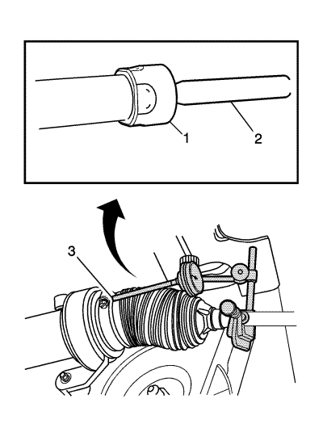
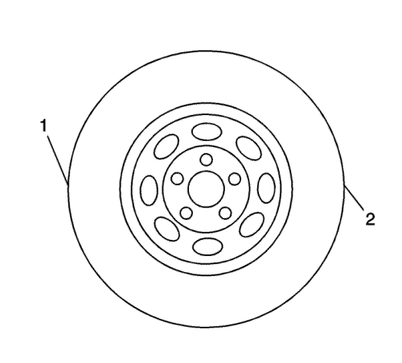

Inspección de la barra de dirección interior del varillaje de la dirección
Herramientas especiales
J-8001 Juego de indicador de cuadrante
Si desea informarse sobre herramientas regionales equivalentes, consultar Herramientas especiales .
Nota: Este procedimiento de inspección no suplanta las inspecciones requeridas por el gobierno local que tengan requisitos más estrictos.
- Coloque la llave de encendido en la posición activada con el motor desconectado.
- Con la ayuda de un asistente, gire el volante hasta la posición completa de parada y mantenga el volante en dicha posición hasta finalizar la prueba. La barra de acoplamiento comprobada debería estar en el interior de la carcasa del mecanismo de la dirección junto al tope de dirección.
- Elevar el vehículo y soportarlo de manera segura. Consultar Elevación del vehículo con un gato .
- Si no existe una buena ubicación para el palpador del indicador de cuadrante J-8001 en la carcasa del mecanismo de la dirección, monte una abrazadera grande para tubos flexibles de engranaje sinfín en la carcasa del mecanismo de la dirección asistida sobre la abrazadera más grande del fuelle del mecanismo de la dirección y alinee la abrazadera de forma que el tornillo pueda servir para ubicar el palpador del indicador de cuadrante J-8001.

- Monte el indicador de cuadrante J-8001 entre la barra de acoplamiento interior (2) y la carcasa del mecanismo de la dirección o la abrazadera de engranaje sinfín para medir el juego entre la barra de acoplamiento interior y la carcasa del mecanismo de la dirección.

Nota: Mueva el neumático sólo lo suficiente para notar cualquier holgura entre la barra de acoplamiento interior y la carcasa de la barra de acoplamiento interior sin mover la cremallera del mecanismo de la dirección.
- Sujetando el neumático en la posición de las 3 en punto (2) y las 9 en punto (1), empuje ligeramente en un lado del neumático para que no exista holgura.
- Ponga a cero el indicador de cuadrante J-8001.
- En el mismo lado del neumático previamente empujado hacia dentro, tire ligeramente hacia fuera y mida la holgura.
- Registre la medida recogida en el indicador de cuadrante J-8001.
- Si el valor medido supera 0,5 mm (0,02 pulg.), cambie el mecanismo de la dirección. Consultar Sustitución del mecanismo de la dirección .
- Repita el procedimiento en el otro lado.
| © Copyright Chevrolet Europe. All rights reserved |